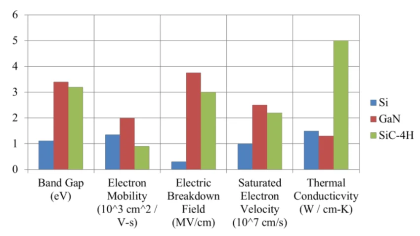
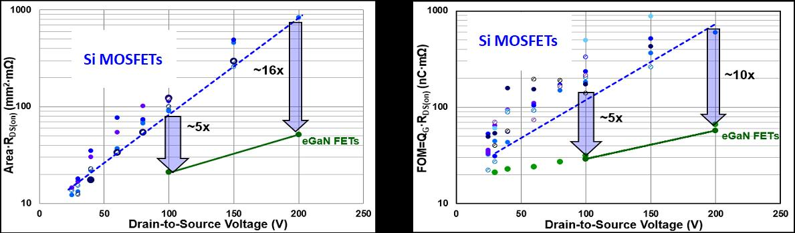
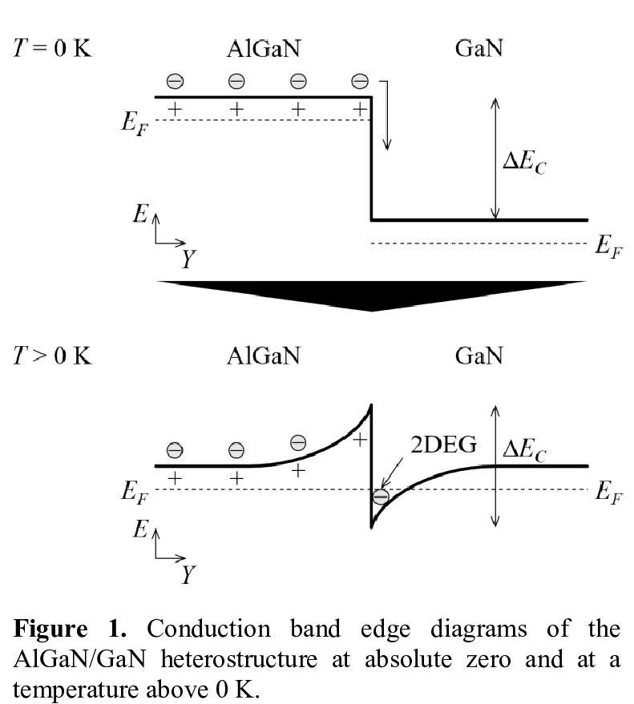
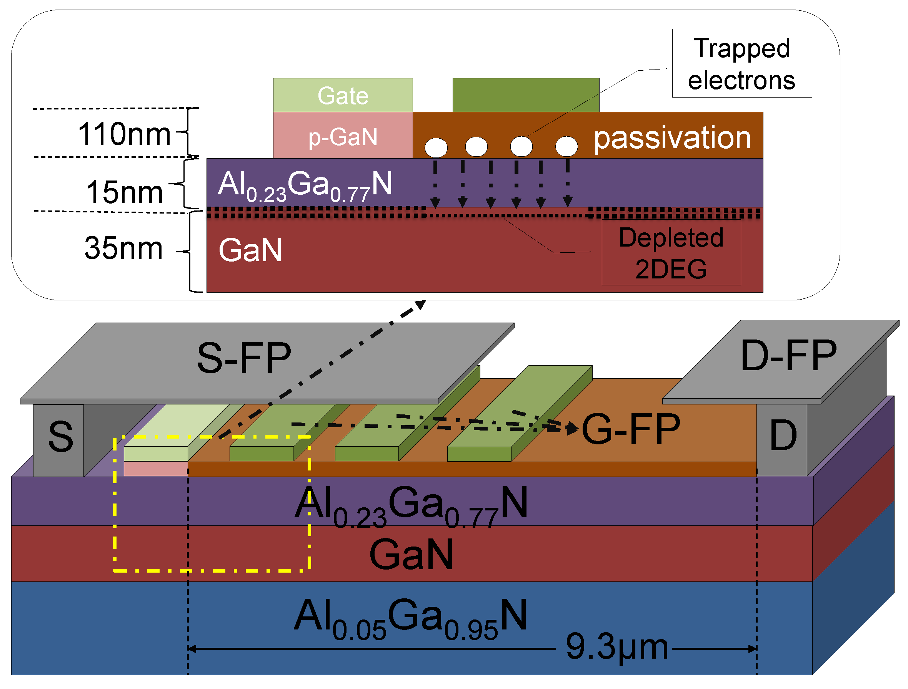

Güç elektroniği hep ilgimi çekmiştir. Başlayalım bakalım nereye doğru gideceğiz.
Silisyumun Sınırı
Güç elektroniğindeki ana amaç nedir? En özet tabirle “enerjiyi” işlemektir. Fişten gelen 220 voltu alıp telefonunuzun narin bataryasına uygun şekilde 5 volta düşürmektir. Bunu yaparken de olabildiğince az kayıplı çalışmak, yüksek gerilime karşı dimdik ayakta durmak ve bu işi milyonlarca kez tekrarlamaktır.
On yıllar boyunca bu işin ustası silisyumdu (Si). Ucuzdu, boldu ve işlenmesi kolaydı. Ama siz gücü artırdıkça silisyumun atomik yapısından kaynaklı sorunlar ortaya çıkmaya başlar. Yüksek voltaj ve akımla boğuşan transistörün savaşması gereken iki temel düşman vardır:
$$ P_{\text{toplam}} \approx P_{\text{iletim}} + P_{\text{anahtarlama}} $$
Silisyumun diz çöktüğü yer ilk kısım olan “İletim kaybı” kısmıdır. Bunun da tek sorumlusu $R_{\text{DS(on)}}$ kavramıdır. Karmaşık harf yığınlarını sevmem, parçalayalım.
- R: Direnç
- D ve S: Drain&Source -> Akımın girdiği ve çıktığı kapılar
- on: Transistörün açık yani akım geçişine izin vermesi
Bir transistörü “ON” hale getirdiğinizde içi kusursuz bir iletkene mi dönüşür? Keşke. Elektronlar transistörün Source kısmından girip Drain kısmından çıkana kadar silisyum atomlarının kapladığı sıkışık bir caddeyi geçmek zorundadır. İşte malzemenin elektron geçişine gösterdiği bu dirence $R_{\text{DS(on)}}$ diyoruz. Direnç ne anlama gelir? Isı anlamına gelir. Transistörden geçen akım arttıkça bu dirençle çarpışıp ortaya çıkan sıcaklık $P = I^2 \times R_{\text{DS(on)}}$ karesel olarak büyür. Siz bunu nasıl hissedersiniz? Cihazının alev topuna döner.
Çıkmaz sokağa doğru ilerliyoruz. Silisyum nasıl iletken hale getirilir? Saf silisyum güzel bir yalıtkandır. İletken hale getirmek için fosfor, bor veya arsenik gibi yabancı atomlar enjekte edilir. Bu işleme Doping, bu yabancı atomlara da dopant atomlar denir. Bundan ne kadar çok eklerseniz o kadar fazla serbest elektronunuz olur, iletkenliğiniz artar ve $R_{\text{DS(on)}}$ düşer. O zaman çözüm basit, çok fazla dopant basıp direnç sıfırlayalım. Keşke. Güç elektroniği sınırlarında gezindiğimiz için transistörlerden sadece iletken olmalarını istemeyiz. OFF konumdayken gelen devasa gerilimi patlamadan bloklamalarını isteriz.
Silisyumda bunun için yapabileceğimiz şey fiziksel güvenlik bariyeri olarak Drift Region inşa etmek. Yüksek voltaj burayı delip geçmesin diye 2 şey yaparsınız:
- Uzun yaparsınız.
- Dopant atomları seyreltirsiniz.
İşte trajedi tam da bu noktada ortaya çıkar. Cihaz kapalıyken voltaja dayanmak için uzun ve dopant fakiri bir yol yaptınız. Peki cihazı açmak isterseniz ne olur? Elektronlar bu iğrenç yoldan geçmek zorunda kalır ve $R_{\text{DS(on)}}$ yukarı fırlar. Bundan kaynaklanan sıcaklığı engellemek için de çirkin ve ağır Heatsink’ler koyacaksınız. Ve ortaya tuğla gibi eski laptop adaptörleri çıkacak.
Mühendisler yıllarca bununla uğraştı. Ama çarptıkları duvar artık mühendislikle değil malzemenin yapısıyla alakalıydı. Çünkü Silisyumun atomik yapısının elektriksel olarak delinmeden dayanabildiği en üst sınır sadece (kritik elektrik alan) 0,3 MV/cm idi. Direnci düşürmek için Drift Region’u biraz bile kısaltırsanız 600 volt silikonu deler geçer (buna avalanche breakdown denir) ve cihazınız mahvolur.
Bu işi çözmemiz lazım. Kritik elektrik alan dedim. Elektrik alan nedir? Voltajın belirli bir mesafeye sıkışmasıdır. 2 uç arasına 600 volt uygularsanız o kısacık aralığın içindeki elektronları yerinden sökmeye çalışan devasa bir elektriksel rüzgar elde edersiniz. (bilimsel olarak pek doğru sayılmaz ama akılda kalıcı)
İşte kritik elektrik alan, malzemenin atomik bağlarının bu rüzgara dayanamayıp pes ettiği nihai kırılma noktasıdır. Eğer bu sınırı aşarsanız impact ionization süreci başlar. Elektron kopup fırlar, başka bir atoma çarpıp ondan elektron kopartır. Bu zincirleme süreç ortalığı mahveder ve yalıtkan olması gereken malzeme kontrolsüzce kısa devre olup kendini yakar.
Şimdi bu işi bandgap kavramı ile bağlayacağız. Elektronlar normal şartlarda çekirdeğe bağlıdır. Bu sakin hallerine Valence Band denir. Bu haldeki malzeme yalıtkandır. Elektronların serbest kalıp akım oluşturabilmesi için Conduction Band kısmına sıçraması gerekir. Bu ikili arasındaki enerji uçurumuna da Bandgap denir.

Peki silisyumun problemi nedir? Bandgap değeri düşüktür, sadece 1.12 eV. Siz cihaz OFF konumdayken elektriksel rüzgarı verdiniz, bu rüzgar elektronları kolayca bu aralıktan yukarı iter. Drift Region’u uzatıp dopantları seyreltmemizin ana sebebi bu aralığın bu kadar ufak olmasıdır.
GaN ne alaka peki? GaN atomlarının bant aralığı 3.4 eV değerindedir. Yani bir elektronun kopup çığ başlatması için çok daha fena bir rüzgar gerekir. Bu yüzden de GaN kritik elektrik alanı ($E_{crit}$) 3.3 MV/cm. Silisyumun tam 11 katı. Bu ne işimize yarar?
Bir cihazın kırılma gerilimi (yani dayanabileceği maksimum voltaj) malzemenin kritik dayanıklılığı ($E_{crit}$) ile içindeki yolun uzunluğunun ($L$) çarpımına eşittir: $V_{BR} = E_{crit} \times L$
Yani aynı 600 voltu bloklamak istiyorsan GaN 11 kat daha dayanıklı olduğu için silisyuma kıyasla 11 kat daha kısa bir yol yapabilirsin. Yani çip küçüldü.
Küçülme kavramı hepinizin bildiği üzere çipler konusunda çok önemlidir. GaN sayesinde başardığımız küçülme bu noktada bize parazitik kapasitansı ortadan kaldırma konusunda yardım edecek. Her transistörün içinde, üretiminden kaynaklı mikroskobik hayalet kondansatörler vardır. Bunlar parazitik kapasitansa sebep olur. Çip ne kadar büyükse, bu plakaların alanı o kadar büyür ve hayalet kapasitans artar. Bir transistörü “Açık” (ON) duruma getirmek için önce bu hayalet kondansatörü elektronlarla (şarjla) doldurmanız gerekir. “Kapalı” (OFF) duruma getirmek için de o yükü boşaltmalısınız.
Silisyumda çip büyüktür. Hayalet kondansatör de kova gibidir. Doldurup boşaltmak zaman alır, buna switching loss denir.
GaN ise küçüktür. Hayalet kondansatör kahve fincanı gibidir. Fincanı çok hızlı doldurup boşaltabilirsiniz. İşte bu sayede GaN transistörler MHz mertebesine ulaşabilir.

Yani elimizde şu harika zincir mevcut:
Geniş bandgap çipi küçültür -> Çip küçülünce parazit kapasitans düşer -> Kapasitans düşünce yüksek frekansta açılıp-kapanma mümkün olur -> Frekans yükseldiği için de aynı güç dönüşümü için gereken bobin ve indüktör boyutu küçülebilir.
HEMT ve 2DEG: VIP Otoyol
Silisyumu iletken yapmak için katkı atomları dökmüştük yola, bunun da elektronların çarpıp sürtünme yaratmasına sebep olduğunu söylemiştik. GaN için bu böyle mi? Değil. HEMT kullanıyorlar.
HEMT mimarisinde elektronların geçtiği yola tek bir katkı atomu bile konmaz. GaN HEMT yapısında saf GaN tabakası üzerine çok ince AlGaN (Alüminyum Galyum Nitrür) tabakası eklenir. Bu iki malzemenin kristal yapıları (atomlar arası mesafeleri) birbirine tam uymaz. AlGaN atomları GaN’a tutunabilmek için esnemek ve gerilmek zorunda kalır. Bu gerilim, (tıpkı bir çakmağın manyetosundaki gibi) devasa bir Piezoelektrik polarizasyon yaratır. Buna malzemelerin kendi doğasından gelen kendiliğinden (spontaneous) polarizasyon da eklenince, iki malzemenin tam birleştiği o mikroskobik sınırda (arayüzde) devasa bir pozitif elektrik alanı oluşur. Bu pozitif alan, çevredeki tüm serbest elektronları dev bir mıknatıs gibi o incecik sınıra doğru çeker.
İşte bu birleşme noktasında biriken elektron yoğunluğuna 2DEG (Two-Dimensional Electron Gas / İki Boyutlu Elektron Gazı) diyoruz.

Neden 2 boyut? Çünkü elektronlar dikey eksende bir “Kuantum Kuyusu"na hapsolmuşlardır. Yukarı çıkıp AlGaN’a geçemezler, aşağı inip GaN’ın derinliklerine düşemezler. Sadece atomik incelikteki bu yatay düzlemde sağa ve sola gidebilirler.
Neden gaz? Elektronlar, bir tüpün içindeki gaz molekülleri gibi hiçbir şeye çarpmadan, sürtünmesizce ve inanılmaz bir hızla Source’dan Drain’e akarlar çünkü sürtünecek arkadaşlar yok.
Tabi her gülün dikeni olduğu gibi bu noktada da bazı sorunlarımız var.
Klasik bir silikon transistörde, siz Gate terminaline voltaj verene kadar kanal kapalıdır. Yani siz emretmeden elektrik geçmez. Buna Normally-Off veya E-Mode denir. Fakat HEMT yapısında o muazzam 2DEG otoyolu, sırf AlGaN ve GaN üst üste konduğu için doğal olarak oluşur. Yani Gate’e hiçbir voltaj vermeseniz bile otoyol açıktır ve akım akar. Buna Normally-On (Normalde Açık) veya D-Mode (Depletion-Mode) denir. Cihazı güç kaynağına taktığınız anda kısa devreyi yersiniz (Bazı RF uygulamalarında veya baz istasyonlarında işe yarayabilir aslında bu durum. Bir ara bakarım belki). Çözüm basit ama zarif: p-GaN Gate.
p-GaN Gate
Mühendisler Gate terminalinin tam altına p-tipi katkılanmış bir GaN tabakası (p-GaN) yerleştirdiler. p-GaN katmanı, gate altında bulunan yarı iletken katmanların elektriksel potansiyelini değiştirir. Bunun sonucu olarak gate altındaki bölge, elektronlar için artık eskisi kadar elverişli bir enerji bölgesi olmaktan çıkar. Gate’e pozitif gerilim verirseniz de 2DEG yeniden kesintisiz hale dönüşür.
Yani source ve drain 2 şehir olsun. 2DEG bunları bağlayan çok hızlı otoyol. p-GaN gate ise yolun ortasındaki bariyer sistemi.

Peki p neyi temsil ediyor?
Malzemelere iletkenlik kazandırmak için yapılan katkılara n-tipi ve p-tipi denilir.
n tipi: Malzemeye dışarıdan elektron eklenmiştir. Ortamda fazladan “negatif” yük (elektron) vardır. p tipi: Malzemeden elektron koparılmış, geriye elektronun girmesi için bekleyen “boşluklar” (holes) bırakılmıştır. Ortam davranışsal olarak “pozitif” yüklüdür.
Burada benim kafam fena yanmıştı o yüzden adım adım gideceğiz.
-
AlGaN/GaN birleşiminde kutuplaşma (polarizasyon) arayüzde artı yük biriktirir. Bu artı yük, zıt kutup olduğu için civardaki elektronları kendine çeker ve 2DEG’i oluşturur.
-
p-tipi GaN’de bolca pozitif taşıyıcı (boşluk/hole) vardır. Bu tabaka üste konunca birleşim kurulurken:
- p-GaN’deki pozitif boşluklar, alttaki 2DEG elektronlarını kendine çeker
- Elektronlar kanaldan yukarı çekilip boşluklarla rekombine olur (yok olurlar)
- Kapının altındaki otoyol boşalır
-
Denge kurulduktan sonra geriye kalan şey, p-GaN tarafındaki hareketsiz negatif iyonlaşmış acceptor atomlarıdır (Mg⁻). Bu sabit eksi yükler:
- Kutuplaşmanın artı yükünden çıkan elektrik alan hatlarını kendi üzerlerine toplar (alan artık elektrona “uzanamaz”, yani 2DEG yeniden oluşamaz)
- Kanala girmeye çalışan herhangi bir elektronu, aynı işaretli yük oldukları için, geri iter.
Yani numara şurada: durağan eksi yükü boşlukta tek başına kararlı şekilde tutamazsın; p-tipi malzeme, o negatif sabit yükü oraya “park etmenin” pilsiz ve kalıcı yoludur.
Zorluklar
“Peki bu kadar harikaysa neden her tarafta GaN kullanmıyoruz?”
Silikon bazlı MOSFET’lere göre hala birim başına 2-6 kat daha pahalılar. Üretim hacimleri hala pek yüksek değil, ölçek ekonomisi oturmadı. GaN her şeye sokabileceğiniz mucize bir çözüm değil kendine uygun alanda parlayan bir yıldız: USB-C şarjları, 5G baz istasyonları, RF güç amplifikatörleri, Veri merkezi PSU’ları, elektrikli araç invertörleri gibi.
Ama nerelerde gereksiz kalıyor? Mikrodenetleyici, CPU, GPU, bellek, basit regülatörler. CPU tarafına bakalım özellikle. Bu arkadaşlar CMOS mantığına dayanır. Bir CMOS kapısı iki tür transistörün eşleşmesidir:
- NMOS: Elektronları taşır (n-tipi). Giriş = 1 ise açılır.
- PMOS: “Delikleri” (hole) taşır (p-tipi). Giriş = 0 ise açılır.
CMOS’un çalışması için NMOS ve PMOS’un birbirine yakın performansta olması gerekir. Biri çok hızlı, diğeri çok yavaşsa devre çalışmaz — sinyal asimetrik olur, güç tüketimi patlar, hız düşer. Ama bunlarda aradaki fark düşük, 3 kat falan. PMOS transistörü biraz daha geniş yaparak (width ayarı) bu farkı telafi edersin ve ikisi dengeli çalışır.
GaN tarafında n-tipi ile p-tipi arasındaki fark yuvarlak hesap 70 kat. PMOS tarafı NMOS’a yetişemiyor. Aynı akımı geçirmek için PMOS’u 70 kat daha geniş yapman gerekir ki bu çip üzerinde fiziksel olarak imkansız — çip kocaman olur, güç tüketimi ve gecikme kabul edilemez seviyeye çıkar. Bunun sebebi ne? Wide bandgap. geniş bant aralığı, değerlik bandındaki deliklerin etkin kütlesini (effective mass) çok büyütüyor. Yani delikler “ağırlaşıyor” ve zor hareket ediyor. Ayrıca GaN’i p-tipi yapmak için magnezyum (Mg) katkılıyoruz, ama bu katkı atomları yeterince aktif olmuyor ve çok yüksek dirençli p-tipi katmanlar elde ediliyor.
GaN-on-X
GaN kristalini büyütmek için altta bir şablon (altlık/substrat) gerekir — tıpkı duvara fayans döşemeden önce düz bir zemin hazırlamak gibi. GaN atomları bu altlığın kristal yapısını taklit ederek sıralanır.
En ideali GaN-on-GaN olur elbette ama şöyle ifade edeyim: 6 inç (150 mm) saf GaN wafer plaka başına 12.000 dolar+ maliyete falan gelir. Standart 8 inç silikon wafer ise 50 dolar.
GaN-on-Silicon transistörlerde, silikon ile GaN atomlarının dizilim uyuşmazlığı yüzünden santimetrekarede $10^8$ (100 milyon) civarında yapısal çatlak/hata oluşur. GaN-on-GaN’da ise bu hata oranı $10^4$ (10 bin) seviyesine iner. Askeri ve Optoelektronik alanlarında maliyetin önemsenmediği durumlarda kullanılırlar.
Şu anda etrafınızda gördüğünüz neredeyse bütün güç adaptörleri ise GaN-on-Si ile yapılmıştır. Maliyet fırlamasın diye gofretin (wafer) tabanı tamamen silikondan üretilir. Üzerine kimyasal buhar biriktirme (MOCVD) yöntemiyle atomik seviyede GaN katmanları dizilir. Akım, transistörün içindeki o en üstteki incecik GaN şeridinden akar. Yani silikon burada sadece bir “taşıyıcı iskele” görevi görür; asıl işi üstteki GaN yapar.
Buradaki en büyük problem lattice mismatch. Silikon atomları ile GaN atomlarının dizilim aralıkları (geometrisi) birbirinden farklıdır. Bu yüzden silikonun üzerine GaN dizilirken aradaki katmanlarda çatlaklar ve mikroskobik hatalar oluşur. Bu hatalar voltajın 650V - 900V üzerine çıkmasını engeller. Ayrıca silikon ve GaN ısıtıldığında farklı oranlarda genleşir. Çip çok ısınırsa bu katmanlar birbirinden ayrılabilir veya bükülebilir. Termal yönetimi de problemlidir.
GaN-on-SiC ise bu ikisinin arasında yer alır. Termal iletkenlik sorunları SiC sayesinde çok azalır ve standart silikona kıyasla dizilim uyuşması daha iyidir. 5G baz istasyonu, uçuk maliyetli olmayan jammer falan yapacaksanız bu tam aradığınız eleman.